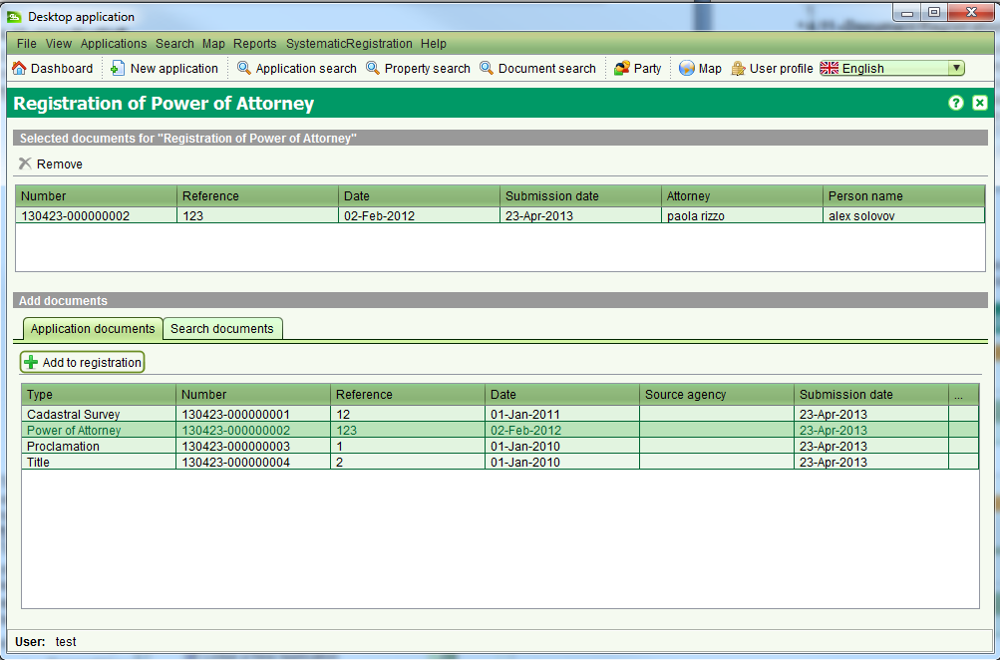

Certains types de documents, surtout les Procurations et les Documents Standards doivent être enregistrés dans SOLA avant de pouvoir y faire référence dans une demande pour justifier ou appuyer une transaction immobilière. L'écran d'enregistrement des documents permet d'enregistrer ces documents officiels ainsi que les désenregistrer une fois qu'ils sont révoqués / annulés. Pour accéder à l'écran d'enregistrement de document, il est nécessaire de déposer une demande contenant un ou plusieurs des services suivants; Enregistrement de Procuration, Enregistrement de Document Standard, Annulation de Procuration ou Retrait de Document Standard. Une fois la demande déposée et assignée, il est nécessaire de commencer le service depuis l'onglet des services de détails de la demande.

Avant d'accèder à l'écran d'enregistrement de document, ajouter le document à enregistrer à la demande afin d'apparaître dans
la liste des documents de demande. Pour enregistrer un document, sélectionner le document depuis la liste des documents de demande
et cliquer pour enregistrer.
Il est possible d'ajouter plusieurs documents pour l'enregistrement si nécessaire.
Si un document est ajouté par erreur à la liste d'enregistrement, il est possible de l'enlever en utilisant 
En ajoutant un document de procuration pour l'enregistrement, il est obligatoire de rentrer le nom de l'avocat ainsi que le nom de la personne à laquelle la procuration est destinée (ex. le cédant).

Voir aussi